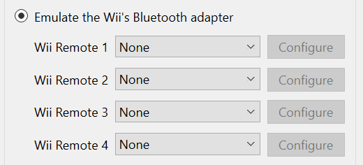

cannonball’s PhobGCC guide
General Use
- When you plug in your controller, press B to activate the analog sticks
-
If you have any issues with your analog sticks when using Slippi/Dolphin, make sure you are following the steps on this section of the
PhobGCC calibration guide
- If you are playing on Slippi/Dolphin with an adapter:
- If you are using a Mayflash or another similar third party adapter you must plug in both of the adapter cables for the controller to function properly. If your controller is not working properly in Slippi/Dolphin this is the first thing to check.
Settings & Calibration
For a more in depth guide read the
PhobGCC calibration guide.
In each section there will be a link to the related section of the calibration guide.
Below is a cheat sheet of all of the controls for changing the settings of your controller.
- Upon changing settings, your controller will briefly output a value corresponding to the setting’s current value on either an analog stick or a trigger. Use an input viewer to see these values, such as SmashScope or the input display in UnclePunch.
-
You can find
SmashScope here.
-
SmashScope will not work on Slippi Dolphin. Most other versions of Dolphin work, you can find
the latest version of Dolphin here.
- Go to Controller Settings in Dolphin and set Wiimote emulation to None for all Wiimotes. A Wiimote is emulated by default in most versions of Dolphin and SmashScope will not function if there are any enabled.

-
Your controller starts in
Safe Mode. You cannot change any settings unless you exit Safe Mode by holding A+X+Y+Start.
- When you exit Safe Mode both of your analog sticks will output Up+Right and your triggers will output their maximum value for 2 seconds. If you are in game your character will roll to the right while this is happening
- Once you are done modifying settings, enter Safe Mode again by pressing A+X+Y+Start. The controller will freeze and output the same values as when you exit Safe Mode, but for 4 seconds instead of 2.
- You can also unplug your controller and plug it back in to ensure it is in Safe Mode.
-
For more information, refer to the
Safe Mode Toggle section of the calibration guide.
- If you received a PhobGCC from a controller modder:
-
If your analog sticks work at all they are probably already calibrated. You will not need to calibrate them again under most circumstances. You can read about
Calibrating the Analog Sticks
 in
this section of the guide.
-
They have likely already set the snapback filtering and waveshaping values. You can read about
Snapback Filtering and WaveShaping
 in
this section of the guide.
- This can only swap X or Y with one of the triggers (L, R, Z).
- This can be used to prevent accidental presses of Taunt or Start by either requiring the button to be held down, or disabling the button entirely.
- Press Z + Start to switch to the next mode.
- The 6 modes are:
–copied directly from the PhobGCC calibration guide–
- Mode 1: Default behavior: both buttons respond immediately.
- Mode 2: D-Pad Up must be held for 1.5 seconds to activate.
- Mode 3: D-Pad Up is disabled entirely.
- Mode 4: Start must be held for 1.5 seconds to activate.
- Mode 5: Start and D-Pad Up both must be held for 1.5 seconds to activate.
- Mode 6: D-Pad Up is disabled entirely and Start must be held for 1.5 seconds to activate.
Troubleshooting/Help
If there is something wrong with your controller that is not addressed here:
-
Search for your problem on the
PhobGCC Discord
Invite link
- See if the problem you have has already been resolved before you post about it.
If you received your controller from me (cannonball):
- Feel free to ask me any questions you have about your controller on discord!
Discord: cannonball